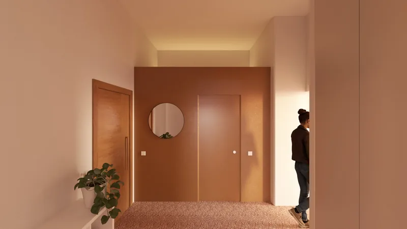
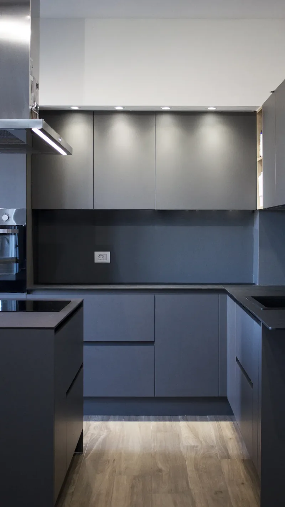

Projekte
Wohnungen, Innenräume, Bars und Restaurants, Villen, Wettbewerbe und experimentelle Studien zur Form.

Innenarchitektur, Wohnungen
Castelfranco Emilia, Italien
2027, im Bau

Zwei Wohnungen
Altstadt, Modena, Italien
2027, Entwurf
mit Alessandro Orrea, Geometra

Wettbewerb
Via De Gennaro, Neapel, Italien
2026

Freistehende Villa
Reggio Emilia, Italien
2026

Bar und Restaurant
Corso Canalgrande, Modena, Italien
2025

Wohnung
Via Malmusi, Modena, Italien
2025
mit tilde studio

Wettbewerb
Corso Matteotti, Fano, Italien
2025

Wohnung
Via Fusco, Modena, Italien
2022

Schmuck aus Keramik
2026

Schmuck aus Titan
2022